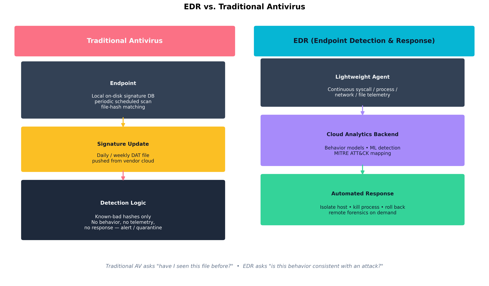
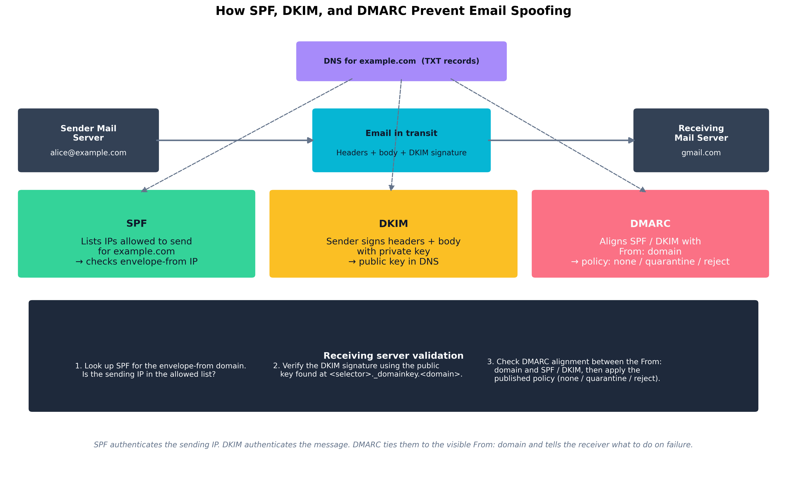

Chapter 9: Network, Endpoint, and Infrastructure Engineering
Aligned SecurityX Objectives:
- 1.1: Given a set of organizational security requirements, implement the appropriate governance components.
- 3.1: Given a scenario, troubleshoot common issues with identity and access management (IAM) components in an enterprise environment.
- 3.2: Given a scenario, analyze requirements to enhance the security of endpoints and servers.
- 3.3: Given a scenario, troubleshoot complex network infrastructure security issues.
Practice-Based Question (PBQ): Juliet Capulet Rolls Out BYOD at Verona Health
Learning Outcomes:
- Analyze requirements to enhance the security of endpoints using EDR, anti-malware, and host-based firewalls.
- Troubleshoot complex network misconfigurations, including routing errors, switching errors, and VPN issues.
- Resolve IPS/IDS issues related to rule misconfigurations, placement, and false positives/negatives.
- Investigate and mitigate DNS security vulnerabilities, including DNS poisoning and zone transfers.
- Troubleshoot Transport Layer Security (TLS) errors, cipher mismatches, and PKI integration issues.
- Implement email security protocols, including DKIM, SPF, DMARC, and S/MIME.
- Mitigate DoS and DDoS attacks targeting network and application resources.
- Manage and secure mobile devices using MDM technologies and browser isolation.
- Implement robust change and configuration management processes, utilizing a CMDB and tracking the asset management lifecycle.
- Analyze endpoint and infrastructure TTPs that drive credential theft, privilege escalation, unauthorized execution, lateral movement, and defensive evasion.
Introduction
The previous chapters built a security architecture from the top down: governance, risk, identity, cloud, cryptography. This chapter is about the day-to-day operational substrate that all of those abstractions actually run on — the endpoints employees use, the network that connects them, the core protocols those endpoints depend on, and the management discipline that keeps the inventory honest.
This is also where most attacks are won and lost. A misconfigured firewall rule, a flat VLAN, a domain controller still running on Windows Server 2012, an unsigned email that lands in a CFO’s inbox, an EDR agent quietly disabled six months ago and never re-enrolled — these are not exotic problems. They are mundane, ubiquitous, and the proximate cause of most successful breaches.
We start with change and configuration management, because every other control in this chapter depends on knowing what you have. We then move to endpoint security, where modern EDR has replaced signature-based antivirus as the primary defense. From there we troubleshoot the network layer (routing, switching, VPNs, IDS/IPS), the core network services everyone takes for granted (DNS, TLS, email, DDoS), and finally the increasingly important domain of mobile and remote device management. The throughline is that competent operations beat clever architecture: the question is rarely “do we have the right tool?” but “is the tool we have actually deployed, configured correctly, and producing usable signal?”
How Do We Manage Infrastructure Changes?
Security cannot defend what it does not know about. The discipline of keeping that “what we have” picture accurate, current, and trustworthy is configuration management, and the discipline of changing it without breaking things is change management. Together they are the operational scaffolding that everything else in this chapter rests on.
Change and Configuration Management
A change is any modification to the production environment: a firewall rule edit, a server patch, a Kubernetes deployment, a routing-table tweak, the addition of a new SaaS tenant. Change management is the formal process by which proposed changes are reviewed, scheduled, and recorded.
A mature change-management workflow has four basic steps:
- Request and impact assessment. The proposer documents what is changing, why, what could break, what the rollback plan is, and which other teams are affected.
- Approval. A Change Advisory Board (CAB) — formal in regulated environments, lightweight in startups — approves, defers, or rejects. Pre-approved standard changes (a routine OS patch with a known rollback) skip the CAB to avoid bottlenecking.
- Implementation in a defined window. The change is performed during a scheduled maintenance window with a designated implementer and verifier, not at 4:55 p.m. on a Friday by whoever happens to be available.
- Post-implementation review. Did it work? Did anything else break? The result is recorded against the original change ticket so that future investigators can correlate “the system started failing on Tuesday” with “ah, we deployed change CR-2317 on Tuesday.”
Configuration management is the data side of the same problem: each system has a desired state (declared in a tool like Ansible, Puppet, Chef, Salt, or a Terraform / IaC pipeline) and an actual state (what is really on the machine). Drift between them is the fertile ground in which most security failures grow.
Example
A firewall rule change through the full workflow
Juliet Capulet’s team at Verona Health submits change request CR-4417: “Open TCP 6443 inbound from the DevOps VLAN to the Kubernetes API server to enable automated CI/CD deployments.”
- Request and impact assessment. The ticket documents the source/destination pair, the business justification, the rollback plan (delete the rule), and a note that the Kubernetes API server is in PCI and HIPAA scope.
- CAB review. An analyst flags that the DevOps VLAN is shared with a contractor subnet. The rule is narrowed to three specific CI/CD runner IPs before approval.
- Implementation window. The rule is applied at 2 a.m. Sunday. A verification test — a successful
curlfrom an approved runner IP and a confirmed rejection from a non-approved IP — is logged in the ticket.- Post-implementation review. The ticket is closed with the exact rule as implemented, the verifier’s name, and an action item to audit contractor IP assignments in the DevOps VLAN.
Six months later, when an auditor asks “why does port 6443 have an inbound allow rule?”, the answer is one click away — not an educated guess based on who remembers the sprint.
Asset Management Lifecycle, Inventory, and CMDB
The Configuration Management Database (CMDB) is the system of record for every asset and every relationship between assets. A good CMDB answers questions like: which servers run this application? Which VLAN are they in? Which patch group? Who is the business owner? Which compliance scope (PCI, HIPAA, SOX) does each asset fall under? When does the support contract expire?
The asset management lifecycle runs from procurement through disposal:
- Procurement and onboarding. New hardware or software enters the environment, is tagged, registered in the CMDB, and assigned an owner.
- Operation. The asset is patched, monitored, and reviewed against baseline configurations. EDR agents, log shippers, and management tooling are confirmed enrolled.
- Maintenance and reassignment. When a system changes role or owner, the CMDB record is updated. Failure to do this is the single most common source of “stale” inventory.
- End-of-life and decommissioning. Drives are sanitized (per Chapter 8), licenses are reclaimed, the asset is marked decommissioned in the CMDB. Forgotten end-of-life systems — devices that were “disconnected” but still on the network, still vulnerable, and still trusted by adjacent systems — are a recurring pattern in serious breaches.
Key Point Every security control in this chapter assumes you know what assets you have. A firewall rule, an EDR agent, a vulnerability scan, an IDS signature — none of them help on a host you do not know exists. The single highest-leverage investment many organizations can make is not a new tool but a CMDB they actually trust.
Warning Shadow IT — assets the security team does not know about — is the usual source of “wait, that server got hit?” moments after a breach. A weekly automated reconciliation between the CMDB, the cloud provider’s inventory APIs, the Active Directory computer list, and the EDR console is more valuable than most teams realize.
Quick Check 9.1
- Recall. What are the four steps in the mature change-management workflow described in the chapter?
- Discriminate. A VM exists in the cloud provider inventory and the EDR console, but not in the CMDB. What operational problem does that reveal?
- Apply. A team requests an inbound firewall rule to TCP 6443 from the entire DevOps VLAN to a Kubernetes API server. Name two corrections Juliet’s change process made before approval in the example.
Answers — Quick Check 9.1
- Request and impact assessment, approval, implementation in a defined window, and post-implementation review.
- Shadow IT or CMDB drift. The environment contains an asset the system of record does not accurately reflect.
- The rule was narrowed to specific CI/CD runner IPs and verification included both a successful allowed connection and a confirmed rejection from a non-approved source. The exact change was then recorded in the ticket.
How Do We Lock Down Endpoints and Servers?
The endpoint — laptop, server, virtual machine, container — is where users do work, where credentials live, and where attackers eventually want to land. A defended endpoint stack today looks very different from one five years ago: signature-based antivirus has been displaced by behavior-based Endpoint Detection and Response (EDR) and increasingly by Extended Detection and Response (XDR), which correlates endpoint signals with network, identity, and email telemetry.
EDR, HIPS/HIDS, Anti-Malware, and Host Firewalls
Traditional antivirus (AV) matches files against a database of known-bad hashes and signatures. It catches known malware quickly and produces few false positives, but it is essentially blind to anything new — a freshly compiled implant, a living-off-the-land attack using only built-in OS tools, a fileless payload that lives only in memory.
Endpoint Detection and Response (EDR) is a different paradigm. A lightweight agent on every endpoint streams continuous telemetry — process creations, network connections, file operations, registry edits, syscall patterns — to a cloud analytics backend. The backend applies behavioral models, machine learning, and threat-intelligence overlays to detect suspicious sequences, not just bad files. CrowdStrike Falcon, Microsoft Defender for Endpoint, SentinelOne, and Palo Alto Cortex XDR are the dominant commercial offerings.

Figure 9.1: Traditional AV asks “have I seen this file before?” — a question with a yes/no answer based on a static signature database. EDR asks “is this behavior consistent with an attack?” — a question that draws on continuous telemetry, cloud-side analytics, and the ability to respond automatically by isolating the host or terminating a process tree.Host-based defenses fall along a spectrum:
- HIDS / HIPS (Host-based Intrusion Detection / Prevention System). Older terminology; HIDS detects and alerts, HIPS prevents by blocking. Most modern EDRs perform both functions but the distinction is still useful when reading vendor documentation or audit reports.
- Host firewall. Per-host packet filter (Windows Defender Firewall, iptables, nftables, pf). Crucial for limiting lateral movement: a workstation has no business accepting SMB or RDP from another workstation, and a host firewall enforces that even if the network firewall has a permissive internal policy.
- Anti-malware. The signature-and-heuristic component, now usually packaged as one feature within an EDR platform.
- DLP agents. Endpoint Data Loss Prevention agents inspect file operations, copy/paste, USB use, and uploads to detect exfiltration of classified data.
| Capability | Traditional AV | EDR / XDR |
|---|---|---|
| Detection model | Signature / hash match | Behavioral + ML + telemetry |
| Coverage of unknown / fileless | Poor | Strong |
| Telemetry retention | Local logs only | Cloud, weeks to months |
| Response capabilities | Quarantine, alert | Isolate host, kill process tree, roll back, remote shell |
| Threat-hunting support | None | Searchable telemetry, MITRE ATT&CK mapping |
| Operational overhead | Low | Higher — requires tuning and an analyst team |
| Cost | Low | Significant — per-endpoint subscription |
Endpoint Privilege Management, Application Control, SELinux, and Attack Surface Reduction
Beyond detection, several controls reduce what an attacker can do once on the endpoint:
- Endpoint Privilege Management (EPM). Removes local administrator rights from users and elevates only specific approved applications on demand. Tools include CyberArk EPM, BeyondTrust, and Microsoft’s own LAPS / Endpoint Privilege Management features.
- Application control / allowlisting. Only approved executables run; everything else is blocked. Windows Defender Application Control (WDAC) and AppLocker on Windows; SELinux execmod and equivalent on Linux. Difficult to deploy on developer workstations, very effective on fixed-purpose servers and kiosks.
- SELinux / AppArmor. Mandatory access control for
Linux. Each process runs under a confined policy that limits which
files, sockets, and capabilities it may use, so a compromised service
cannot freely read
/etc/shadoweven if it is running as root. - Attack Surface Reduction (ASR). A specific Windows
feature that disables risky behaviors at the OS level: Office macros
launching child processes,
mshtarunning unsigned scripts, USB-borne untrusted executables. ASR rules are cheap, broadly applicable, and routinely disabled “because they break a vendor tool” — exactly the conversation security teams should be having.
Credential Dumping, Privilege Escalation, Unauthorized Execution, and Defensive Evasion
The TTPs (Tactics, Techniques, and Procedures) that drive endpoint compromise map cleanly onto the MITRE ATT&CK framework:
- Credential dumping (T1003). Tools like Mimikatz extract NTLM hashes, Kerberos tickets, and cached credentials from LSASS memory. Defenses: Credential Guard, LSASS Protected Process Light, removing local admin, EDR detections for LSASS read.
- Privilege escalation. Exploiting kernel CVEs, abusing misconfigured services with weak file permissions, token impersonation. Defenses: prompt patching, least-privilege service accounts, EDR detections for token theft.
- Unauthorized execution. Living-off-the-land
binaries (
certutil.exe,regsvr32.exe,wmic.exe, PowerShellInvoke-Expression) used to download and run code. Defenses: PowerShell Constrained Language Mode, ASR rules, application allowlisting. - Defensive evasion. Disabling EDR services, clearing event logs, BYOVD (bring your own vulnerable driver) attacks that load a signed-but-buggy driver to terminate security agents from the kernel. Defenses: tamper protection, vulnerable-driver blocklists, SIEM alerts on EDR-service-stopped events.
Browser Isolation and Configuration Management
The web browser is the modern endpoint’s single largest attack surface. Two complementary controls have emerged:
- Browser isolation. All web rendering happens in a remote container (or a local VM); only pixels stream back to the user. Even if a malicious web page exploits a renderer vulnerability, the compromise is contained inside the disposable isolation environment. Cloudflare Browser Isolation, Menlo Security, and Microsoft Edge for Business with Application Guard are common implementations.
- Browser configuration management. Centralized policy through Chrome Enterprise, Edge for Business, or Firefox ESR — controlling extensions, certificate trust stores, password storage, sync, download paths, and exception domains. An unmanaged browser is an unmanaged endpoint.
Example
Detecting credential dumping in EDR telemetry
A typical Mimikatz invocation produces a telltale sequence the EDR backend can recognize even if the binary itself is renamed or repacked:
- A non-system process (e.g.,
powershell.exe,notepad.exe) openslsass.exewithPROCESS_VM_READ | PROCESS_QUERY_LIMITED_INFORMATION.- That process performs a sequence of large
ReadProcessMemorycalls covering the address ranges where credential structures live.- The process writes a file with high-entropy contents to disk or transmits a comparable blob to an external IP.
No single one of those steps is unambiguous evidence of an attack. The sequence is — which is precisely the kind of multi-step pattern signature-based AV cannot express but a behavior-based EDR backend can. The defensive payoff: even an attacker using a freshly compiled, never-before-seen credential-dumping tool trips the same behavioral fingerprint.
Quick Check 9.2
- Recall. What kinds of telemetry does EDR collect that traditional antivirus generally does not?
- Discriminate.
powershell.exeopenslsass.exe, performs largeReadProcessMemorycalls, and writes a high-entropy blob. What attack activity is this, and what detection model catches it best?- Apply. A fixed-purpose server still lets users keep local admin rights and run arbitrary unsigned utilities. Name two controls from the section that would most directly reduce that risk.
Answers — Quick Check 9.2
- Process, network, file, registry, and related behavioral telemetry. EDR watches sequences of activity, not just static file signatures.
- Credential dumping, specifically the kind of LSASS-memory access associated with tools like Mimikatz. A behavior-based EDR model is the best fit.
- Endpoint Privilege Management to remove routine admin rights and application allowlisting or ASR-style execution controls to prevent unapproved binaries and risky child-process behavior.
How Do We Troubleshoot Network Defenses?
Network defenses fail in characteristic ways: rules in the wrong order, sensors in the wrong segment, tunnels that drop fragments, ACLs that hide a quiet asymmetric routing problem behind apparent connectivity. The architect’s job is to recognize the failure modes and produce systems that fail loudly rather than silently.
Resolving IPS/IDS False Positives
Intrusion Detection / Prevention Systems sit on a network segment and inspect traffic against a rule library — Snort, Suricata, Zeek, or commercial offerings from Palo Alto, Cisco, Fortinet. Their tuning problems are universal:
- False positives happen when a legitimate traffic pattern matches an attack signature. A vulnerability scanner running internally will trip dozens of IPS rules; failing to whitelist its source IP creates noise that hides real signal.
- False negatives are worse but harder to see — the attack happened, the IPS did not flag it. Sources include encrypted traffic the IPS cannot inspect, asymmetric routing where the sensor sees only half the conversation, fragmented or out-of-order flows the rule engine does not reassemble correctly, and outdated rule sets.
- Placement matters. An IPS at the internet edge sees north-south traffic; it cannot detect lateral movement between two servers in the same VLAN. East-west visibility requires either internal sensors, host-based detection, or network segmentation that forces traffic through inspection points.
The remedy is a tuning loop: investigate every alert for at least the first thirty days, mark legitimate traffic patterns as exclusions, and keep rule sets current — Emerging Threats and Talos publish daily updates.
Correcting Routing, Switching, VPN/Tunnel, and ACL Errors
Network misconfigurations break in characteristic ways:
- Asymmetric routing. Outbound packets take one path; return packets take another. Stateful firewalls drop the asymmetric half, often producing the maddening symptom of “connections that work for ten seconds and then hang.” The fix is consistent routing through the firewall pair, often via PBR (policy-based routing) or by collapsing the upstream paths.
- VLAN trunking errors. A trunk port misconfigured as access — or vice versa — produces sporadic connectivity. A VLAN-hopping attack (double-tagging) exploits switch behavior on a misconfigured trunk to reach segments that should be inaccessible.
- VPN MTU/MSS mismatches. Tunnels add overhead. An IPsec VPN with default 1500-byte MTU on the LAN side will fragment large packets, and any NAT device that drops fragments produces “small pages load, large pages hang” complaints. The fix is MSS clamping (1380–1400 bytes is typical for IPsec).
- ACL ordering. Most firewall and ACL engines evaluate top-down with first-match. A permissive rule above a restrictive rule silently overrides it. Audit rules in order, not as a set.
Lateral Movement Paths, Remote Administration Abuse, and Identity-Impacting Infrastructure Drift
A single compromised endpoint should not be able to reach every other endpoint in the environment, but on a flat network it can. The structural defenses are:
- Network segmentation. Workstations live in one VLAN, servers in another, OT/IoT devices in their own. Inter-VLAN traffic crosses a firewall.
- Microsegmentation. Per-workload policy enforced at the host or hypervisor (NSX, Illumio, Cisco Secure Workload). Defaults to deny; explicit allow lists describe permitted flows.
- Just-in-time remote administration. PAM-issued, time-boxed credentials for RDP/SSH; jump hosts that log every session; disabling SMB v1 and restricting WinRM to specific admin subnets.
- Domain controller hygiene. Tier-0 admin accounts log in only from privileged access workstations; service accounts use group-managed service accounts with auto-rotated passwords; legacy NTLM is disabled where possible.
Infrastructure drift — a firewall rule added “temporarily” for a project that ended two years ago, an old VPN account still enabled, a service principal granted excess permissions during an incident response and never trimmed — is the silent enemy of identity hygiene. Quarterly access reviews and IaC-managed firewall configurations are the practical countermeasures.
Improving Observability and Sensor Coverage
A network you cannot see is a network you cannot defend. Practical observability layers:
- NetFlow / IPFIX / sFlow. Per-flow metadata (5-tuple, byte counts, durations) at every router or switch.
- Packet capture. Full-fidelity capture at chokepoints (perimeter, between trust zones, in front of crown-jewel applications). Storage is expensive; rolling buffers and selective triggers help.
- DNS query logs. Recursive resolver logs are an extraordinarily high-leverage source — most malware beacons resolve a domain before connecting, so DNS catches what later layers miss.
- TLS metadata (JA3/JA4 fingerprints, SNI). Even when content is encrypted, fingerprints of the TLS client itself are surprisingly distinctive and stable across malware families.
Case Study
WannaCry (May 2017): Network Propagation Through Unpatched SMB
On Friday, May 12, 2017, a piece of self-propagating ransomware named WannaCry began spreading across the internet at unprecedented speed. Within 24 hours it had infected more than 230,000 computers in 150 countries — including the UK National Health Service (NHS), which had to cancel an estimated 19,000 appointments and turn ambulances away from affected hospitals; Spain’s Telefónica; FedEx; Renault; Russian banks; German railway displays; and a long list of other organizations whose Friday afternoon ended in ransom screens (Microsoft Security Response Center 2017; National Audit Office 2017).
The technical pattern was a textbook case of every theme in this section. The exploit at the core was EternalBlue, a vulnerability in Microsoft’s SMBv1 protocol that had been developed and weaponized by the U.S. National Security Agency, then leaked publicly by the Shadow Brokers group in April 2017. Microsoft had released the patch (MS17-010) in March — two months before WannaCry — but the patch had not been applied widely. The NHS in particular was running large numbers of Windows XP and Windows 7 systems behind under-resourced IT teams, with SMBv1 enabled and exposed across flat internal networks where workstations could freely talk SMB to one another (Microsoft Security Response Center 2017; National Audit Office 2017).
Once a single host inside an organization was compromised — typically through an exposed SMB port reachable from the internet, or through an infected mobile device crossing the perimeter — the worm scanned the local subnet for port 445 and propagated to every unpatched Windows host it could reach. Inside the NHS, this propagation took minutes across hospital-wide networks. The flat network topology turned a single-host compromise into an enterprise outage.
The malware was finally halted, more or less by accident, when British researcher Marcus Hutchins (working under the handle MalwareTech) discovered an unregistered domain inside its code that the malware contacted before encrypting. The domain functioned as a kill switch — Hutchins registered it for $10.69, and every infection that successfully resolved the domain immediately ceased encryption. Variants of the malware that removed the kill switch surfaced within days, but the initial wave was already contained.
The post-incident lessons are exactly the operational disciplines this chapter has been arguing for:
- Patching matters even when it is inconvenient. MS17-010 had been available for two months. The NHS’s failure to deploy it was an operational decision driven by old vendor dependencies and undersized IT budgets — not a missing capability.
- Network segmentation contains blast radius. Hospitals where workstation-to-workstation SMB was filtered saw localized outages. Hospitals where it was not saw enterprise-wide encryption.
- End-of-life systems are time bombs. Windows XP had been out of support for three years. The systems running it were “too critical to upgrade” — and therefore guaranteed to be the worst-affected when something like WannaCry arrived. Microsoft eventually released an emergency XP patch for free, an unprecedented move that itself is a measure of how badly the long tail of EOL systems shapes incidents (Microsoft Security Response Center 2017).
- Egress and DNS visibility help even mid-attack. Hutchins’s kill-switch discovery was possible because researchers were looking at DNS queries from infected hosts in real time.
Quick Check 9.3
- Recall. Give one common cause of IDS/IPS false positives and one common cause of false negatives from the section.
- Discriminate. Users say “small pages load, large pages hang” across an IPsec tunnel. Which network problem fits that symptom best?
- Apply. A hospital still has unpatched SMB-reachable Windows hosts on a flat internal network. Name two controls from the chapter that would most directly limit WannaCry-style spread.
Answers — Quick Check 9.3
- A false positive example is legitimate internal scanner traffic matching attack signatures. A false negative example is encrypted or asymmetric traffic the sensor cannot fully inspect.
- An MTU or MSS mismatch across the tunnel. The fix is typically MSS clamping so large packets stop fragmenting and failing.
- Patch or retire the vulnerable SMB systems and segment or firewall workstation-to-workstation SMB paths. Host firewalls and disabling legacy SMB behaviors also cut the worm’s blast radius.
How Do We Secure Core Network Services?
DNS, TLS, and email are the protocols an enterprise depends on without thinking about them. Each was designed in an earlier, more trusting era of the internet, and each has been retrofitted with cryptographic and policy controls that must be deliberately enabled.
DNS Security (DNSSEC, Poisoning, Sinkholing, Zone Transfers)
DNS resolves names to addresses. Without protection, any answer at any step of the recursive lookup can be forged.
- DNSSEC signs DNS records using public-key cryptography rooted at the DNS root zone. Resolvers that validate DNSSEC reject forged responses. Adoption has been slower than hoped — DNSSEC adds operational complexity and key management — but it is the only end-to-end protection against DNS forgery.
- DNS poisoning / cache poisoning. An attacker injects a forged answer into a recursive resolver’s cache. The Kaminsky attack (2008) was the canonical demonstration. Modern resolvers mitigate by randomizing source ports and case-randomizing query labels.
- DNS sinkholing. A defensive technique in which the corporate resolver returns deliberately invalid answers (or a controlled “sinkhole” address) for known-bad domains. Used against C2 infrastructure, malicious advertising domains, and DGA-generated names.
- Zone transfers (AXFR/IXFR). Bulk replication of DNS zone data between authoritative servers. Should be restricted by IP and/or TSIG. Open AXFR queries on public-facing nameservers leak the entire internal naming map of a company — a recurring finding on penetration tests.
- DoH / DoT (DNS over HTTPS / TLS). Encrypts the DNS conversation between client and resolver. Improves user privacy; complicates corporate visibility, since traditional DNS log capture no longer sees the queries.
TLS Troubleshooting (Cipher Mismatch and PKI Issues)
TLS handshake failures fall into a small number of root causes, all
of which the architect should be able to diagnose from
openssl s_client or a packet capture:
- Cipher / version mismatch. The client offers ciphers the server does not support, or a corporate proxy enforces TLS 1.2-only against a service that has moved to 1.3-only. Solution: align supported versions; favor TLS 1.3 with a 1.2 fallback during transition.
- Untrusted issuer. The server’s certificate chains to a CA the client does not trust. Common in internal deployments where a private CA is missing from a server’s or container image’s trust store.
- Hostname mismatch. The certificate’s SAN does not include the requested hostname. Fix the SAN list, not the client.
- Expired or not-yet-valid certificate. The Mad Hatter case study from Chapter 8. Expiration monitoring is the operational answer.
- Revoked certificate. Caught by OCSP / OCSP stapling (Chapter 8).
- Clock skew. A client whose clock is hours off rejects valid certificates. NTP/Chrony hygiene matters more than people expect.
Email Security (DKIM, SPF, DMARC, S/MIME)
Email was designed without authentication. Three layered controls have been bolted on, and they only work together:
- SPF (Sender Policy Framework). A DNS TXT record listing the IP addresses authorized to send email for a domain. Receivers check the connecting IP against the list. SPF authenticates the sending server, not the message.
- DKIM (DomainKeys Identified Mail). The sending server computes a cryptographic signature over selected headers and the body, then publishes its public key in DNS. Receivers verify the signature. DKIM authenticates the message itself and survives forwarding.
- DMARC (Domain-based Message Authentication, Reporting, and
Conformance). A DNS-published policy that tells receivers what
to do when SPF or DKIM fails and the result is not
“aligned” with the visible
From:domain. Policies arenone(monitor only),quarantine(junk folder), andreject(refuse delivery). DMARC also produces aggregate reports back to the domain owner so misconfigurations are visible.

Figure 9.2: SPF, DKIM, and DMARC are layered defenses against email spoofing. SPF authenticates the sending IP, DKIM authenticates the message contents, and DMARC ties both back to the visibleFrom: domain — telling the receiving server which policy to
apply on failure.
S/MIME — covered in Chapter 8 — is a different layer entirely: it provides end-to-end signing and encryption between specific senders and recipients using X.509 certificates. SPF/DKIM/DMARC protect the channel; S/MIME protects the content.
| Attack | Mechanism | Primary Mitigation |
|---|---|---|
| Direct spoofing | Forged From: from arbitrary
IP |
DMARC reject with aligned SPF
or DKIM |
| Display-name spoofing | “CFO Name” with attacker email | User training + mailbox banner for external senders |
| Lookalike domain | paypa1.com,
rnicrosoft.com |
Domain monitoring, secure email gateway lookalike detection |
| Compromised internal account | Real authenticated send | UEBA + impossible-travel + DLP egress rules |
| Reply-chain hijack | Insertion into legitimate thread | DMARC + content scanning + EDR on attachment opens |
| Malicious attachment | Macro-enabled doc, ISO, LNK | ASR rules, attachment sandboxing, Mark-of-the-Web enforcement |
| Phishing link | URL → credential capture page | URL rewriting + sandbox detonation, browser isolation, FIDO2 |
Example
What SPF, DKIM, and DMARC look like in DNS — and what happens when a spoofed message arrives
Three DNS records protect
verona-health.org:verona-health.org TXT "v=spf1 include:_spf.google.com ip4:203.0.113.20 -all" google._domainkey.v-h.org TXT "v=DKIM1; k=rsa; p=MIIBIjANBgkq..." _dmarc.verona-health.org TXT "v=DMARC1; p=reject; rua=mailto:dmarc@verona-health.org"The SPF record authorizes Google’s mail servers and one specific IP (
203.0.113.20) to send for the domain; anything else is a hard fail (-all). The DKIM record publishes the public key used to verify the cryptographic signature attached to every outbound message. The DMARC record instructs receiving servers to reject any message where neither SPF nor DKIM aligns with the visibleFrom:domain — and to send aggregate failure reports back to the security team.When a phishing campaign attempts to send “From: cfo@verona-health.org” from a rented VPS in Eastern Europe, the receiving mail server checks the VPS IP against SPF (not listed), checks the DKIM signature (absent or invalid), finds neither aligns, and rejects the message outright before it reaches the inbox. The CFO’s name never shows up in any employee’s mailbox from that source. The DMARC aggregate report logged the attempt and surfaced it in the security team’s weekly review.
Quick Check 9.4
- Recall. What do SPF, DKIM, and DMARC each validate or enforce?
- Discriminate. A public authoritative nameserver answers AXFR requests from anyone on the internet. What reconnaissance exposure does that create?
- Apply. A phishing campaign sends mail that appears to come from the CFO’s domain using a rented VPS. Name three layered controls from the section that should block or blunt that attack.
Answers — Quick Check 9.4
- SPF validates authorized sending IPs,
DKIM validates the message signature, and
DMARC aligns those checks with the visible
From:domain and tells receivers what to do on failure. - It exposes the entire zone contents, leaking the organization’s naming map and host inventory for reconnaissance.
- DMARC with aligned SPF or DKIM, secure-email controls such as lookalike detection or sandboxing, and post-delivery controls such as browser isolation or FIDO2-resistant credential theft mitigation all reduce the attack’s chance of succeeding.
DoS/DDoS and Resource Exhaustion
A Denial of Service (DoS) attack consumes a resource (bandwidth, connections, CPU, memory) until legitimate users cannot use the service. Distributed DoS (DDoS) does so from many sources simultaneously, defeating simple IP blocking. Categories:
- Volumetric. Saturating bandwidth with raw packets (UDP floods, DNS or NTP amplification). Mitigated upstream — at the ISP, the cloud provider’s scrubbing center, or services like AWS Shield, Cloudflare, or Akamai Prolexic.
- Protocol. Exhausting connection state (SYN floods, slowloris). Mitigated by SYN cookies, connection limits, and stateful proxy layers.
- Application-layer (Layer 7). Targeted requests that look legitimate but exhaust application resources — expensive search queries, unauthenticated POST floods. Mitigated by WAFs, rate limits, CAPTCHA, and adaptive defenses tuned per endpoint.
The general defense is layered absorption: a CDN + WAF in front, rate limits at the API gateway, autoscaling backends with circuit breakers, and an incident playbook that includes upstream provider contacts before the attack happens.
How Do We Manage Mobile and Remote Devices?
Phones, tablets, and laptops outside the office are the modern enterprise’s most awkward attack surface. They carry corporate data, authenticate to corporate identity systems, and travel into uncontrolled networks every day.
MDM Technologies and App Containment
Mobile Device Management (MDM) — and the broader category of Unified Endpoint Management (UEM) — gives IT a central control plane over enrolled devices. Microsoft Intune, Jamf, VMware Workspace ONE, and Google Workspace MDM are common platforms. NIST’s current enterprise mobile-device and BYOD guidance treats centralized management, policy enforcement, and app/container controls as foundational safeguards (Howell et al. 2023; Boeckl et al. 2023). Capabilities typically include:
- Configuration profile push. Wi-Fi, VPN, certificate, and policy profiles delivered automatically.
- App management. Deploy, update, and remove approved apps; block specific risky apps; require apps to be installed from managed stores.
- Compliance enforcement. Require disk encryption, biometric unlock, current OS version, no jailbreak/root, EDR present and reporting; non-compliant devices lose conditional access (Chapter 5) (Howell et al. 2023; Boeckl et al. 2023; Rose et al. 2020; Temoshok et al. 2025).
- Selective wipe. On a BYOD device, wipe only the corporate container — work email, files, app data — without touching the user’s personal photos and contacts. Critical for the legal-and-employee-relations side of BYOD.
- App containerization. Work data lives in a sandboxed container (Android Work Profile, iOS Managed Apps, Microsoft Intune App Protection); copy/paste and screenshots from work apps to personal apps are blocked.
The two deployment models that matter:
- COBO (Corporate-Owned, Business-Only) / COPE (Corporate-Owned, Personally Enabled). The company owns the device and has full control. Easiest model for security; most expensive and least flexible for users.
- BYOD (Bring Your Own Device). The user owns the device and the company manages a container on it. Cheaper and more popular with employees; legally sensitive and operationally intricate.
Case Study
Juliet Capulet’s BYOD MDM Rollout at Verona Health
Juliet Capulet, security awareness trainer at Verona Health (a 4,000-employee regional hospital network), is the operational lead on a BYOD initiative that has been simmering for two years. Clinicians want to use their personal phones for secure messaging, on-call notifications, and electronic health record (EHR) access at bedside. The CFO wants to stop buying corporate phones for every nurse. The CISO wants to make sure the next breach report does not name Verona Health.
The pre-rollout state is bad. Several hundred clinicians have already self-enrolled their phones in the EHR vendor’s mobile app using their AD passwords; there is no MFA, no device posture check, and no way to know which devices are jailbroken or running an unpatched OS. Lost-phone incidents are reported to IT roughly once a month and to the privacy office almost never.
Juliet’s program runs in four phases over six months.
Phase 1 — Policy. Verona’s legal team writes a BYOD acceptable-use agreement. The crucial provisions: the company has the right to wipe the corporate container on demand; the company will not access personal data, location, or browsing; lost or stolen devices must be reported within 24 hours; jailbroken devices are prohibited; the user is responsible for keeping the device’s OS within two major versions of current. Each enrolling user must e-sign the agreement before MDM enrollment proceeds.
Phase 2 — Technology. Microsoft Intune is the chosen MDM, integrated with Entra ID (Azure AD) for conditional access. The corporate container approach (Intune App Protection on iOS, Work Profile on Android) is mandated; full-device management is offered as an option for the small number of executives who are issued company-paid phones. EHR access requires a managed device, FIDO2 or Authenticator app MFA, recent OS, encryption enabled, and EDR (Defender for Endpoint Mobile) reporting. A non-compliant device is blocked at sign-in by conditional access (Howell et al. 2023; Boeckl et al. 2023; Rose et al. 2020; National Institute of Standards and Technology 2025).
Phase 3 — Pilot and rollout. The pilot covers two clinical units (forty users) for thirty days, with daily check-ins and a fast-feedback Slack channel. Two issues surface: (1) some older Android devices can’t run the required EDR agent, and (2) the mandatory PIN policy interferes with one-handed phone use during patient care. Juliet adjusts: a hardship process for old devices (corporate device issued instead) and a tap-to-unlock biometric option that satisfies the spirit of the PIN requirement. Rollout proceeds in waves of 500 users per week.
Phase 4 — Operations. A monthly report from Intune feeds into the security council: enrollment rate, compliance posture, incident counts (lost devices, attempted access from non-compliant devices), and selective wipes performed. The first month’s report shows 38 lost-phone reports — a 4× increase over previous numbers — which Juliet correctly interprets not as a worsening problem but as an improving reporting culture. Each of the 38 phones received a selective wipe within an hour of being reported; in two cases the phone reconnected to a network long enough for the wipe command to succeed before the thief could pull the SIM.
Six months in, Verona Health has 3,700 enrolled devices, zero successful unauthorized EHR mobile accesses, and a CFO whose phone bill dropped by $180,000 a year. The CISO writes a one-paragraph note for the next board meeting describing the program as “the most boring success of the year” — by which she means it has produced no incidents to talk about, which is exactly the goal.
Chapter Review and Conclusion
Operational security — the unglamorous work of inventory, change control, patching, hardening, and monitoring — is what most organizations do worst and what attackers most reliably exploit. The architectures of the previous chapters only deliver value when the endpoints are running an EDR that has not been disabled, the network is segmented enough that one compromised host does not become every host, the DNS and email infrastructure are configured to reject forgery, and every device that touches corporate data — including the ones in employees’ pockets — is enrolled, posture-checked, and wipeable. Most of this chapter is not about clever tools. It is about the management discipline of deploying, configuring, and maintaining the tools an organization already has.
Key Terms Review
- Change Management: Formal process for proposing, approving, scheduling, implementing, and reviewing modifications to production systems.
- Configuration Management Database (CMDB): The system of record for assets and relationships among them; the substrate every other security control depends on.
- Asset Management Lifecycle: Procurement → operation → maintenance → decommissioning, recorded against the CMDB.
- EDR (Endpoint Detection and Response): Behavior-based endpoint security platform combining a lightweight agent, cloud analytics backend, and active response capabilities.
- XDR (Extended Detection and Response): EDR extended with network, identity, email, and cloud telemetry for cross-domain detection.
- HIDS / HIPS: Host-based intrusion detection / prevention systems; legacy terminology now subsumed by EDR.
- Host Firewall: Per-host packet filter; critical for limiting lateral movement.
- Endpoint Privilege Management (EPM): Removes local administrator rights and elevates approved applications on demand.
- Application Allowlisting: Only approved executables run (WDAC, AppLocker, equivalents).
- SELinux / AppArmor: Linux mandatory access control confining processes to defined policies.
- Attack Surface Reduction (ASR): Windows feature set disabling specific risky behaviors at the OS level.
- Credential Dumping: Extraction of credentials from process memory or system stores (Mimikatz, LSASS read).
- Living-off-the-Land Binaries (LOLBins): Built-in OS
tools used by attackers to avoid dropping new files
(
certutil,regsvr32,wmic, PowerShell). - BYOVD: Bring Your Own Vulnerable Driver — loading a signed but buggy driver to disable kernel-protected security agents.
- Browser Isolation: Remote rendering of web content so renderer compromises cannot reach the user’s endpoint.
- IDS / IPS: Network detection / prevention systems running rule-based and behavioral analysis at chokepoints.
- Asymmetric Routing: Outbound and return traffic taking different paths; commonly breaks stateful firewalls.
- VLAN Hopping: Attack exploiting trunk-port misconfiguration to reach segments that should be unreachable.
- MSS Clamping: TCP option adjustment to avoid fragmentation across VPN tunnels with smaller MTU.
- Microsegmentation: Per-workload network policy enforced at the host or hypervisor.
- DNSSEC: Cryptographic signing of DNS records to prevent forgery.
- DNS Sinkholing: Defensive DNS responses redirecting queries for known-bad domains to controlled addresses.
- Zone Transfer (AXFR): Bulk DNS zone replication; must be restricted lest internal naming maps leak.
- DoH / DoT: DNS over HTTPS / TLS; encrypts DNS resolution traffic.
- SPF (Sender Policy Framework): DNS record listing IPs authorized to send email for a domain.
- DKIM (DomainKeys Identified Mail): Cryptographic signature over email headers and body verified via DNS-published public keys.
- DMARC: Policy framework aligning SPF / DKIM with
the visible
From:domain and instructing receivers how to handle failures. - DDoS — Volumetric / Protocol / Application: Three categories of denial-of-service attack, each requiring different mitigations.
- MDM / UEM: Mobile (or Unified) Endpoint Management; centralized control plane for enrolled mobile and desktop devices.
- Selective Wipe: Removal of corporate container contents on a BYOD device without touching personal data.
- App Containerization: Sandboxed work data on personal devices (iOS Managed Apps, Android Work Profile).
- COBO / COPE / BYOD: Corporate-Owned Business-Only / Corporate-Owned Personally Enabled / Bring Your Own Device — three deployment models with distinct security and policy implications.
Review Questions
True / False
- The Configuration Management Database (CMDB) is primarily a finance tool used to track asset depreciation; security operations does not generally rely on it for inventory accuracy or compliance scoping.
- Endpoint Detection and Response (EDR) detects threats primarily by matching local files against a daily-updated database of known-bad hashes, in the same way traditional antivirus has always worked.
- A host-based firewall on every workstation is a meaningful control against lateral movement, because workstations have no legitimate reason to accept SMB or RDP connections from other workstations.
- Application allowlisting (Windows Defender Application Control, AppLocker) blocks all executables except those explicitly approved, which makes it especially effective on fixed-purpose servers and kiosks.
- SELinux and AppArmor are kernel-level mandatory access control
frameworks that confine each process to a policy, so a compromised
service running as root cannot freely read arbitrary files such as
/etc/shadow. - The MITRE ATT&CK tactic of “credential dumping” is most commonly defended against by running antivirus with daily signature updates, because Mimikatz and similar tools are easily detected as known-bad files.
- A BYOVD (“Bring Your Own Vulnerable Driver”) attack loads a signed-but-buggy kernel driver to terminate security agents from the kernel, which is why vulnerable-driver blocklists and tamper protection are now standard EDR features.
- False positives on an IDS are operationally cheap to ignore; false negatives are the only category that matters because they represent missed attacks.
- Asymmetric routing — where outbound and return traffic take different paths — is a frequent cause of stateful-firewall connection drops and requires consistent path enforcement (often via PBR) to resolve.
- WannaCry’s rapid spread across organizations such as the UK NHS in 2017 is largely attributable to flat internal networks where workstations could freely speak SMB to one another, combined with Windows hosts unpatched against the EternalBlue vulnerability disclosed two months earlier.
- DNSSEC encrypts the DNS query and response between the client and the recursive resolver, hiding the queried domain name from any on-path observer.
- An open AXFR (zone transfer) on a public-facing DNS server allows anyone to download the entire zone, leaking internal naming and host inventory information that is useful for reconnaissance.
- SPF authenticates the sending IP, DKIM authenticates the message
itself via cryptographic signature, and DMARC ties both back to the
visible
From:domain and tells the receiver what to do on failure. - Setting a domain’s DMARC policy to
p=noneblocks all email that fails SPF and DKIM checks, providing the strongest possible level of inbound spoofing protection. - Application-layer (Layer 7) DDoS attacks are most effectively absorbed at upstream ISPs through raw-bandwidth scrubbing, because the requests they send look identical to legitimate traffic and cannot be distinguished from it at the application layer.
- In a BYOD deployment, selective wipe removes corporate container contents from the device without touching the user’s personal data — which is a critical capability both for incident response and for the legal acceptability of the program.
- Conditional access can require that an MDM-enrolled device meet posture requirements (encryption enabled, current OS, no jailbreak, EDR reporting) before being permitted to authenticate to corporate resources.
- A stale firewall rule added “temporarily” for a project two years ago is a textbook example of infrastructure drift — an erosion of the original security posture that occurs gradually unless quarterly access reviews and IaC-managed configurations push back against it.
- TLS handshake errors caused by a hostname mismatch should be resolved by configuring clients to skip hostname validation, since a reissued certificate would unnecessarily disrupt connectivity.
- DNS query logs from corporate recursive resolvers are a high-leverage detection source because most malware resolves a command-and-control domain before connecting, so DNS catches activity that later network layers miss.
Answer Key
- False. The CMDB is a security-critical inventory and relationship store; it underpins compliance scoping, vulnerability management, incident response, and change management. Treating it as merely a finance tool is exactly how shadow IT grows.
- False. Hash matching describes traditional antivirus. EDR streams behavior telemetry (process, file, network, registry) to a cloud backend that applies behavioral and ML detection — which is why it catches fileless and never-seen-before threats that AV misses.
- True. Workstation-to-workstation lateral movement (SMB, RDP, WinRM) is exactly what host firewalls are supposed to prevent, regardless of the network firewall’s posture.
- True. On systems with a fixed application portfolio, allowlisting blocks unsigned and unknown executables outright, eliminating most malware execution paths.
- True. MAC frameworks like SELinux and AppArmor enforce per-process policies independent of UID, so a compromised root-running service is still constrained.
- False. Mimikatz is widely repacked and renamed, so signature AV is unreliable. The effective defenses are Credential Guard, LSASS Protected Process Light, removing local admin, and EDR detections for LSASS memory reads.
- True. BYOVD has become the standard way attackers terminate EDR agents, which is why vulnerable-driver blocklists (Microsoft’s recommended block list, HVCI, tamper protection) are now baseline.
- False. False positives are operationally expensive — they erode analyst attention and cause real attacks to be ignored. A disciplined tuning process to suppress legitimate noise is essential.
- True. Stateful firewalls drop the half of an asymmetric flow they did not see initiate, producing characteristic “works briefly, then hangs” symptoms.
- True. The MS17-010 patch had been available for two months; a flat internal network turned a single SMB-reachable host into an enterprise-wide outage. WannaCry is the textbook case for both patching discipline and segmentation.
- False. DNSSEC signs records to prevent forgery; it does not encrypt the query or response. Encryption between client and resolver is provided by DoH or DoT, not by DNSSEC.
- True. Open AXFR is a routine penetration-test finding precisely because it leaks the complete naming inventory of a domain. AXFR should be restricted by IP and TSIG.
- True. This is the layered relationship between the three controls — and the reason none of them on their own provides full protection.
- False.
p=noneis a monitoring-only policy. The receiver applies no enforcement action; it simply reports failures back to the domain owner. Enforcement requiresp=quarantineorp=reject. - False. Layer 7 DDoS is best mitigated by WAFs, rate limits, application-aware adaptive defenses, and CAPTCHAs — not by raw bandwidth scrubbing, which addresses volumetric attacks. Layer 7 attacks deliver low traffic volumes but exhaust application resources.
- True. The legal and HR ramifications of touching personal data on a BYOD device are severe, and selective wipe is the technical capability that lets the program work.
- True. This is the standard model: MDM produces a posture assertion that conditional access consumes at sign-in to allow or deny access.
- True. Drift is gradual, silent, and exactly what regular access reviews and IaC-managed configurations are designed to detect and reverse.
- False. Disabling hostname validation is a serious downgrade that defeats one of TLS’s core authentication guarantees. The correct fix is to reissue a certificate with the correct SAN (or to fix DNS).
- True. DNS is one of the highest-leverage telemetry sources in any environment; most malware reveals itself through name resolution before any subsequent network behavior is visible.